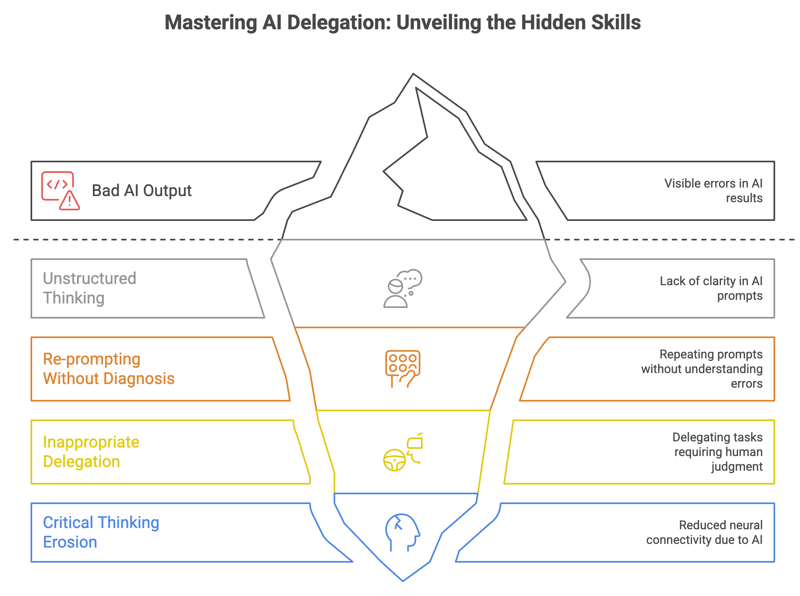

Four Skills to Work with AI Without Losing Your Mind
We've been through this before. Mobile phones solved a real problem — we stayed connected. Social media solved another — we found our people. Both were useful. Both came with costs we didn't see coming. Now AI is here, and most of the conversation is about what AI can do. I'd rather talk about what you need to do.
A study from MIT found that people who used LLMs to write essays showed measurably weaker brain connectivity, lower memory recall, and a reduced sense of ownership of their own work — compared to people who wrote without AI assistance. The tool did the task. The person got worse at the task.
Source: Your Brain on ChatGPT: Accumulation of Cognitive Debt when Using an AI Assistant for Essay Writing Task — MIT, 2025
We saw a version of this play out with social media. Research showed that Facebook's arrival at colleges correlated with a 7% rise in severe depression and 20% in anxiety disorders among students. We built tools to connect people and didn't think hard enough about what would happen next.
AI is the third wave. And this time, we can choose to be intentional about it. That starts with four skills — not AI skills, but thinking skills that determine whether AI makes you more capable or just more dependent.

Skill 1: Structure your thinking before you delegate it
This sounds basic. It isn't. The reason most people get bad output from AI isn't the model — it's the input. Vague objective, garbage result. If you can't define what you're trying to do, who it's for, and what good looks like, AI will fill that gap with something plausible. Plausible is not the same as right.
The skill is: write the objective down. Break it into tasks. Add context. This is just good thinking — but AI makes it non-negotiable. Before, you could fake clarity in a meeting and recover later. With AI, the gap shows up immediately.
Think of AI as a new employee. You wouldn't hand them a task with no brief and expect good output. The quality of what you get back is a direct reflection of how clearly you defined the work.
Skill 2: Diagnose before you re-prompt
Most people re-prompt by rewriting the same thing in a different way. That's not iteration — it's hope. When AI output is wrong, the skill is figuring out why. Was the objective unclear? Missing context? Wrong constraint? Bad example? Each has a different fix.
Diagnostic thinking is what separates people who iterate well from people who just keep asking. When your employee does something wrong, you don't repeat the instruction louder. You ask: what did they not understand? Same question to ask when AI gets it wrong.
Skill 3: Decide what you delegate and what you don't
Not every task should go to AI. Not because AI can't do it — but because some tasks are where your thinking lives. Strategic decisions, complex negotiations, anything that requires you to develop judgment over time — these shouldn't be fully delegated.
Is this a task I need to stay good at?
If yes, use AI to support, not replace. A pilot doesn't let autopilot take over during takeoff and landing. They take manual control at the parts that matter most. AI can fly the cruise. You need to be present for the critical moments.
Skill 4: Protect your critical thinking
This is the one most people skip — and the one with the most evidence behind it.
The MIT study found something specific: people who used ChatGPT for writing had lower neural connectivity in areas associated with memory and learning. The more you let AI think, the less your brain does. That's not a metaphor. It's measurable.
The fix isn't to avoid AI. It's to stay deliberate about which parts of your thinking you keep. Read without summarizing. Write a first draft before asking AI to improve it. Solve a problem manually before asking for help. Keep the muscle warm.
IQ scores in several developed countries have been declining since the 1990s after rising for most of the 20th century. Researchers are careful not to claim a single cause — but the pattern of cognitive offloading to tools is worth taking seriously before we add the most powerful tool yet.
The four skills connect
You can't iterate well if you haven't structured the problem. You can't delegate well if you don't know what's worth protecting. And none of it matters if you stop thinking critically about what you're doing and why.
AI is the most useful tool most of us have ever had. It's also the first tool with a direct feedback loop into how we think. That deserves more care than we gave to our phones.
The one thing to take away: Adopt AI like you're managing a brilliant new employee — not like you're outsourcing your brain. The tool is only as good as the thinking you bring to it.